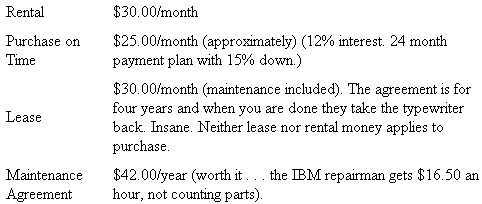
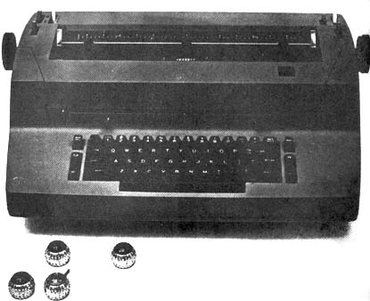

If you can type, are willing to meet some standards, can work under the pressure of a deadline and live in or near a university or college town you can start a home business-full or part time-doing typing for students. If you turn out clean, crisp copy at some speed, the business can be a good one too: once your reputation is established you can earn up to $500 a month.
You'll find a demand for your services because college students are required to turn in large numbers of papers, there's a general feeling that professors prefer those papers to be typed . . . and many students cannot type, cannot type well or just don't have time to do the job. In addition to simple term papers, graduate students must often prepare a thesis as a degree requirement. This thesis must be typewritten and meet certain standards so that it can be microfilmed, xeroxed or printed by offset. Most grad students either cannot type well enough to meet the standards for a thesis; or do not leave themselves the time to do their own typing.
Obviously, you'll need a typewriter if you expect to establish yourself in this business . . . and lucky is the person employed as a secretary by a boss who'll let her work evenings on the office IBM. If you work out such an arrangement, though, it's only fair that you conduct your moonlighting efforts with your own ribbons and paper. Keep the supply receipts, too . . . just in case someone decides to make an issue of your activities.
If you're not already employed by an understanding boss or do not otherwise have access to an office electric, you'll have to rent or purchase a machine. This will increase your overhead but will also give you more time to work and a more flexible schedule. The pros outweigh the cons, so call the nearest IBM office and arrange to rent or purchase an office electric.
Why IBM? Because, in my limited experience, there isn't a better typewriter made. The quality of its copy is high and the machine is sturdy. You can gallop up to 120 wpm on an IBM and it won't boggle, skip or jam. (If you type for long, you'll hit 90 to 120 wpm on familiar word groups and phrases and there's nothing more exasperating than a dinky little machine that jams up and makes mistakes for you when you can already make enough by yourself.)
Brand X typewriters drive me wild. They hop across the desk and spin when I hit the return. At the end of every ten lines, I have to seize such a useless device and put it back in front of me. An IBM on a rubber typewriter mat, on the other hand, will stay in front of you and TYPE.
Ask for an IBM Selectric. Once you've used this model, you won't be able to return to a portable, standard or electric machine of any other brand without great feelings of rage and frustration.
The Selectric has an ordinary keyboard . . . but it does not have an ordinary striking mechanism or a carriage on which the paper rides back and forth. Instead, the sheet being typed on remains stationary while a little ball on a carriage runs across the paper to strike out the lines. The balls are available in many type faces (at $18 each) and, although you get one with the machine, you're sure to want two or three more eventually that you can vary the appearance of your finished work.
The element design does make the Selectric different from any other typewriter you've ever used but you'll receive an easily understood manual with the machine. Once you read that book, it'll only take you about two seconds to master-and learn to love-the Selectric.
Where I live (near Sacramento, California), the prices on an IBM Selectric range as follows:
You may be quoted slightly different figures in your area, but I'm sure they'll run close to the above. Whatever, it's only good business sense to be sure that you have enough capital to tide you over a slow start . . . or that you have a job lined up in advance that will cover your setup costs.
When the IBM man brings your machine, ask him for an erasure guard (a little plastic card with various-sized holes in it). He should have a mess of them in his pocket to give away free (they say "IBM" on them) and they're handy little gadgets. Just place the right size hole over an error and erase through the opening. The guard will reduce smearing, protect adjacent characters and help you make a faster correction.
Use nothing but carbon ribbons on your typewriter. A box of a dozen costs $11.15 and you can use each one only once. Why expensive carbon instead of less costly, reusable cloth? Because most people are beginning to appreciate and expect the sharper, blacker image made by the better ribbon. The carbon tape may not be thrifty, but it does produce the best possible copy for reproductive purposes. The finest work done with a cloth ribbon simply does not have the same legibility and graduate students, especially, have begun to specify "carbon ribbon" for their papers.
About the only other materials you'll need are a ream (500 sheets) or two of 20-lb. BOND paper, several typewriter erasers and a correction fluid such as SNOPAQUE or CORRECTETTE (STENO-AID is also good-Ed.). Correction fluid is white and opaque. You paint it across an error and, when the liquid dries, you can retype right over it. Used with discretion, such corrections can be detected only by paranoids. You can usually use as much of the fluid as you want on term papers and reports, but be reasonable . . . a page that weighs a pound isn't very professional.
Visit the Graduate Divisions of the universities and colleges in your area and ask for their sheets of rules and regulations regarding the typing of theses. You'll find that many schools do not permit use of correction fluids and specify that any erasures be almost invisible. Such strict standards must be maintained where theses are microfilmed because correction fluid will mess up the microfilming process. The rules sheets will also give you, in great detail, each school's specifications for margins, spacing, etc. Some customers bring a set of regulations along with them when they deliver their rough draft . . . but I find that it saves time and confusion if I have a rules sheet on file for each school that I deal with.
When I have a margin requirement to meet, I take a sheet of bond and mark the margins in with heavy black ink (see Fig. 1). Then I put the marked sheet behind the page I'm typing and try not to run over the lines (which show through). I also make lines three inches, two inches and one above the bottom margin (not the bottom of the page) to warn me when I'm getting to the end of the prescribed area.
Type up a small notice of offering your service enough to fit three or four times on a single 8 1/2 x 11 sheep of paper and have the page duplicated on a copy machine for a few cents. Then cut the notices apart and distribute them liberally around your campus or campuses and student meeting places (dormitories are the best locations of all in which to post your ads).
Spend a few evenings putting your notices up . . . and then check them periodically, since people sometimes remove then; for the phone number rather than copy the information. I've never run an ad in a student newspaper but the rates for such periodicals are quite inexpensive and it's worth a try.
The first assignments are the toughest and, after you've successfully completed a few jobs, the people you've worked or will start sending their friends around . . . and those friends will soon send their friends. Word of mouth is still the most effective form of advertising.
A student with a term paper or an application letter to be typed is generally calm and in no hurry. Graduate students, however, are another story. Folks in the latter category are usually (a) looking for a job, (b) negotiating for a job, (c) moving, (d) trying to get some recalcitrant committee member to sign the thesis or (e) all of these. If a grad student botches his paper he may well lose a job, be fined a large "late fee" or fail to get his degree for another six months. Graduate students, then, are almost always tired, harried and up against a deadline. I call this complex of symptoms "Thesisosis".
A person with thesisosis is half out of his mind. Remember this and treat him accordingly. Remember, too, that his previous experience with secretaries (or anyone connected with a typewriter) may well have led him to expect you to be sullen, lazy and more than a little stupid. He hopes not, of course - when he comes to you, he's praying that you'll be professional, competent, calm and honest - but he's ready for a dope. So be prepared.
Let your graduate students (and all your other customers as well) know they're in good hands when they bring a job to you. Keep your house or office and yourself tidy. Don't do any silly secretary imitations. Try to appear relaxed and professional. If you have finished work handy, show it to the potential client. Find out when his deadline is and arrange your schedule so that you can complete his assignment with time to spare, allowing ample margin for last-minute changes and the correction of errors.
Take a good look at every manuscript before you accept the job. If you aren't sure you can handle the assignment, turn it down. It's better to say "no" than wind up with a demented grad student freaking out on your hands.
Proofread all your work and make neat corrections before giving finished copy to its owner. He'll probably find other errors and want some final changes made anyway, so - again - allow time for each client to bring manuscripts back for final touching up.
I have each new customer list his name, address, phone number, etc. on a simple form that I've devised (see Fig. 2 ). If the client has any special instructions, I make sure they're entered on the same sheet. The page then becomes my log and billing record as I complete the job ("25 pages text at $.60, $15.00" or "7 tables at $.75, $5.25").
My usual charge is $.60 a page for straight text, $.75 each for pages with equations, a foreign language quote, footnotes or a table and $1.00 for every page of bibliography. Ask around to learn the current prices in your area and set your rates accordingly.
When a customer makes a change that requires retyping, I charge for the second work. If I make a mistake that ruins a page, I do not charge for retyping . . . but when there is both a mistake of mine and a client change on a page, I do recharge for the fresh copy.
Many people have a compulsion to mark boldly through an error with a pen or lead pencil, when just a light pencil notation in the margin would suffice. Since it's almost impossible to make a neat correction over pen or pencil marks in the text, I warn each client against noting errors in that manner . . . and then charge for retyping a page if he does so mark the text. Surprisingly, the need to directly mark typos is so overpowering that many folks quietly pay double for the privilege.
I once had a $120 check bounce and I now accept only cash for my work. If you follow the same rule, be sure to tell your customers ahead of time so they'll have the money ready and with them when they come to pick up their jobs.
Before a new client completes his charge sheet, I give him a page on which are listed my prices, my cash-only rule and explicit directions for indicating corrections . . . just so he won't feel that I'm trying to outwit him later when I present my itemized bill.
If a customer questions that final bill, I go to the file and pull a copy of his original charge sheet. Some clients will add up the total again, but I've never had anyone argue once they've looked the charge sheet over a second time.
Use good quality paper, even though it's more expensive. It takes corrections better and is cheaper in the long run.
If you aren't willing to be meek about commas, don't type for English majors.
When your customer isn't sure where he wants figures and drawings (or doesn't have them done when he brings a manuscript to you), leave off the page numbers and don't type the table of contents. Allow enough time at the end of the job to clean up these details.
If you're not sure what some squiggle means, work on something else or call the customer and ask. If the client can't be reached and you must continue, put down exactly what he has in the rough draft . . . it's his mistake, then, and not yours.
If a student makes off with your finished product without paying you . . . a call to the graduate division or his major professor will settle his hash.
Request a typewritten rough draft if you have difficulty reading a person's handwriting. This will cut down on business . . . but it'll also reduce traumas.
Use the backing sheet.
When you make a mistake, admit it and correct it.
Save your waste paper for telephone notes.
Get a dictionary and use it . . . a lot of people can't spell.
Conducting a cash-only business saves troubling with the Infernal Revenue Serpent . . . until they run you to ground. Keep accurate records and avoid trouble.
If my no-nonsense approach in this article gives you the impression that I'm a real hard mama who spends a lot of time jumping on my customers . . . or that this home business is a tough one with too many exacting deadlines . . . I'd like to close by saying "not so".
Typing is an honest and useful skill and I get a craftsman's pleasure from setting up page after page of neat and elegant text.
Ninety-nine percent of my clients have been pleasant and interesting people with worthwhile papers. Many have been so grateful for a professional job that they've returned with both cash to pay their bill and a small present. Most have recommended me to friends and some have advised their schools to endorse my work.
You can be your own boss, improve your professional skills, meet interesting folks and make good, honest money typing college papers. The business will allow you to build your own schedule around a favorite hobby or other interest . . . while you save a nest egg for that homestead or other "big" project.
At least that's the way it works for me.
|
 |
 |
|